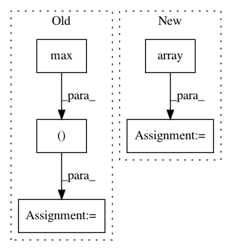

9de3b3fd4781b6e22da802a12f46e7d26ce29d20,gqcnn/grasp.py,SuctionPoint2D,from_feature_vec,#Any#Any#Any#Any#,275
Before Change
depth = v[5]
if depth_im is not None:
i = int(min(max(center_px[1], 0), depth_im.height-1))
j = int(min(max(center_px[0], 0), depth_im.width-1))
depth = depth_im[i, j] + depth_offset
// compute center and angle
center = Point(center_px, camera_intr.frame)
return SuctionPoint2D(center, axis, depth, camera_intr=camera_intr)
After Change
// read feature vec
center_px = v[:2]
grasp_axis = np.array([0,0,-1])
if v.shape > 2 and axis is None:
grasp_axis = v[2:5]
grasp_axis = grasp_axis / np.linalg.norm(grasp_axis)
elif axis is not None:
In pattern: SUPERPATTERN
Frequency: 3
Non-data size: 5
Instances
Project Name: BerkeleyAutomation/gqcnn
Commit Name: 9de3b3fd4781b6e22da802a12f46e7d26ce29d20
Time: 2018-02-12
Author: jmahler@berkeley.edu
File Name: gqcnn/grasp.py
Class Name: SuctionPoint2D
Method Name: from_feature_vec
Project Name: has2k1/plotnine
Commit Name: b8f8bbb6e8f5480174c4c49445bc0e7d952f3946
Time: 2014-04-25
Author: eric.chiang.m@gmail.com
File Name: ggplot/geoms/geom_abline.py
Class Name: geom_abline
Method Name: _plot_unit
Project Name: p2irc/deepplantphenomics
Commit Name: 26668f6689e1c269dded86a7f0f0cbcd2e7dca9e
Time: 2017-03-05
Author: jubbens@gmail.com
File Name: DAG_regressor.py
Class Name:
Method Name: